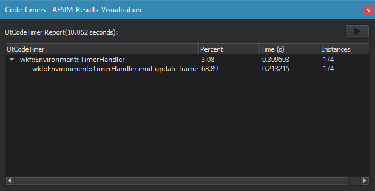

Code Timers - Warlock¶
Code timers may be enabled in CMAKE by setting the UTIL_DEV_CODE_TIMERS variable. Once this is done, the dialog will appear in the View Menu.
Include UtCodeTimer.hpp to files which contain code you wish to measure. To measure the execution time of a block of code you must insert code timers in one of the following ways:
Scope Timers¶
{
UtScopeTimer timer("my timer");
...Scoped code to be timed
}
Start/Stop Pairs¶
UtCodeTimer::Start("my timer");
...Code to be timed
UtCodeTimer::Stop();
- … warning::
Code timers affect performance.
Warning
Code timers will never be enabled for production code.
Warning
Code timers do not currently work anywhere but the main application thread.
Warning
Unmatched Start/Stop pairs may cause unexpected behavior.
Once the timers are set up in code, and compiled, they will show up in the code timer dialog like so:
Code timers will be measured over a course of 10 seconds. You may pause the update by hitting the pause button, and resume with the play button. The dialog displays the timers (if executed) in a tree structure, showing how the timers scopes overlapped. The percent value shows the percent of time spent in that code for the parent scope (the top level scope being the 10 second update). The time shows the absolute time spend in the code. The instances shows how many times the timer was called.